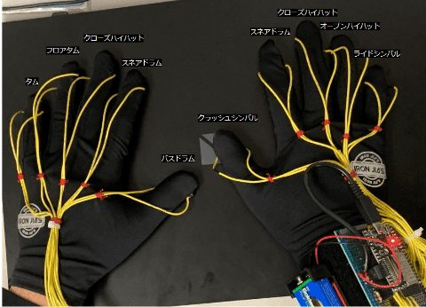
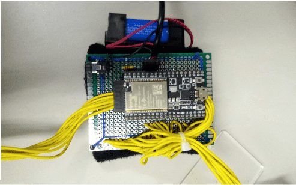

概要
叩いたときの振動を各指先のピエゾ素子でアナログ信号として検出し、マイコン側でトリガーへ変換して対応する音声データを再生する仕組みです。 直感的に叩けて持ち運びやすく、練習やパフォーマンス用途で使えるコンパクトな電子ドラムを目指しました。
外観


直感的に演奏できる省スペースなドラムセットを目指して制作した楽器。
指先にピエゾ素子を取り付け、壁や床など身近な場所を叩くだけでドラム演奏ができる手袋型デバイスです。
叩いたときの振動を各指先のピエゾ素子でアナログ信号として検出し、マイコン側でトリガーへ変換して対応する音声データを再生する仕組みです。 直感的に叩けて持ち運びやすく、練習やパフォーマンス用途で使えるコンパクトな電子ドラムを目指しました。

